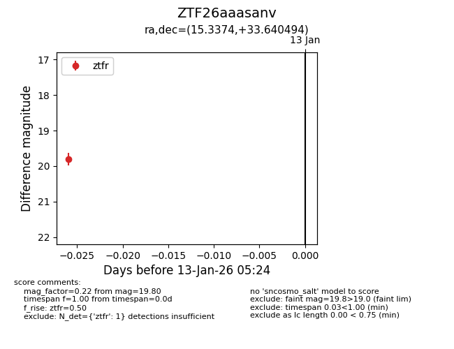
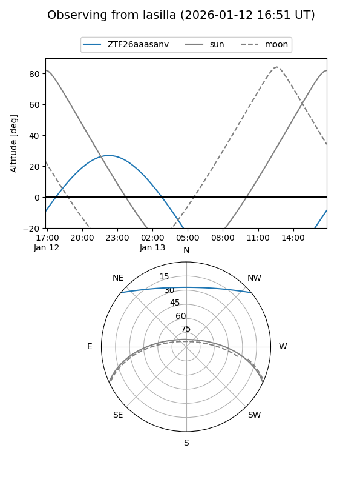
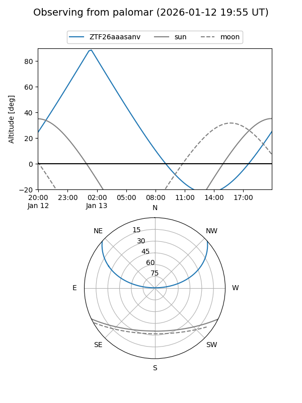

ZTF26aaasanv
Target ZTF26aaasanv at 2026-01-13 05:24
Aliases and brokers:
FINK: link
Lasair: link
ALeRCE: link
alt names
ZTF26aaasanv (ztf,fink_ztf)
Coordinates:
equatorial (ra, dec) = 15.3374,+33.64049
equatorial (HMS+DMS) = 01:01:20.97,+33:38:25.78
galactic (l, b) = (125.2948,-29.18578)
Flags:
Photometry:
last ztfr=19.80
1 ztfr detections
Lightcurve

Visibility


Additional plots